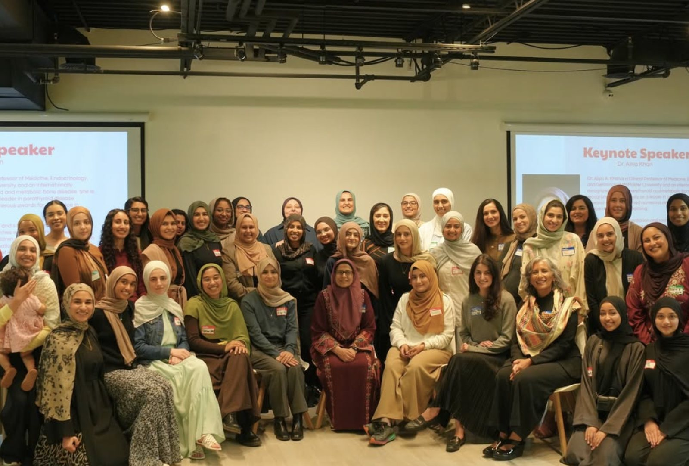
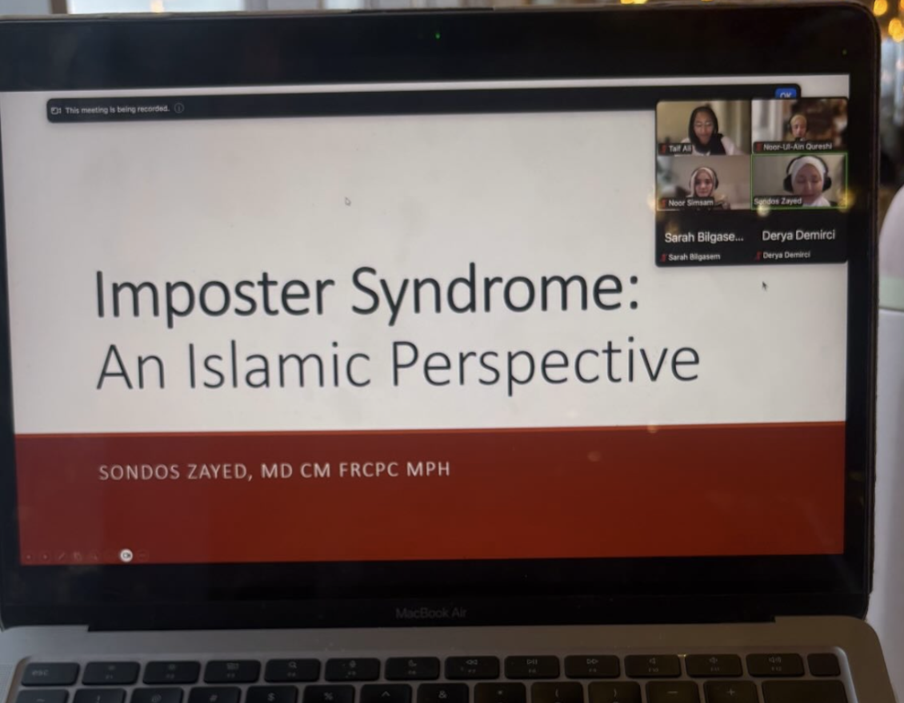
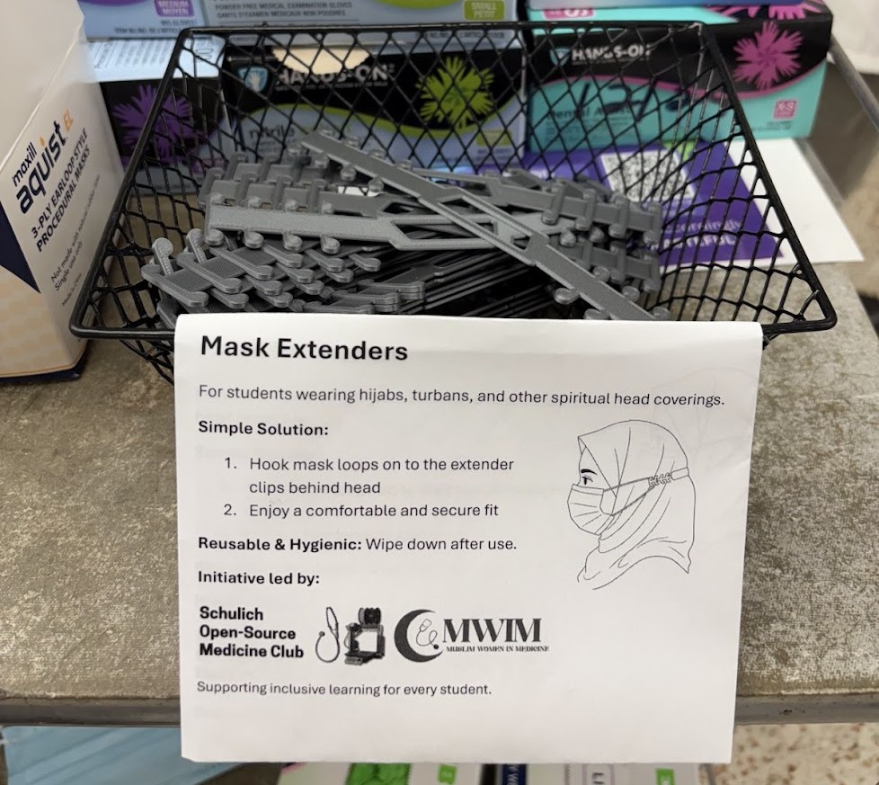
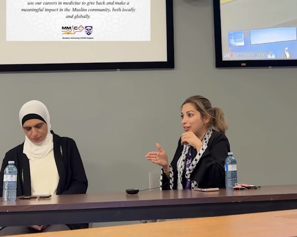

Events and initiatives
Come together
Gatherings where Muslim women in medicine share stories, build connections, and grow side by side.

Our national gathering, together in one room.
Past events

Muslim Women in Medicine keynote with Dr. Aliya A. Khan
Internationally recognized physician, educator, researcher, and humanitarian Dr. Khan shared reflections on Muslim mentorship, female representation in healthcare, faith and medicine, leadership, resilience, identity, and building a meaningful career in healthcare.

Muslim Women in Medicine Mentorship Networking Evening
Presented by CMWIM, the TMU, McMaster, and University of Toronto MMAC chapters, and ISNA Cares. Muslim women students connected with physician mentors across specialties in a relaxed setting designed to encourage honest questions, specialty exploration, shared mentorship, and meaningful community.

Imposter Syndrome: An Islamic Perspective
Dr. Sondos Zayed, MD CM FRCPC MPH, led a conversation about understanding imposter syndrome through an Islamic lens and navigating self-doubt in medicine.

Hijab Mask Extenders in Anatomy Labs
Led by the Schulich Open-Source Medicine Club and CMWIM, this accessibility initiative provided reusable mask extenders for students wearing hijabs, turbans, and other spiritual head coverings, supporting a comfortable and secure fit in anatomy labs.

Physician Panel: Giving Back Through Medicine
Dr. Ruba Kiwan and Dr. Nehal Al Tarhuni spoke with students in London and Windsor about using careers in medicine to advocate for their communities and make a meaningful impact locally and globally.
Event announcements go out on Instagram and in the WhatsApp community.